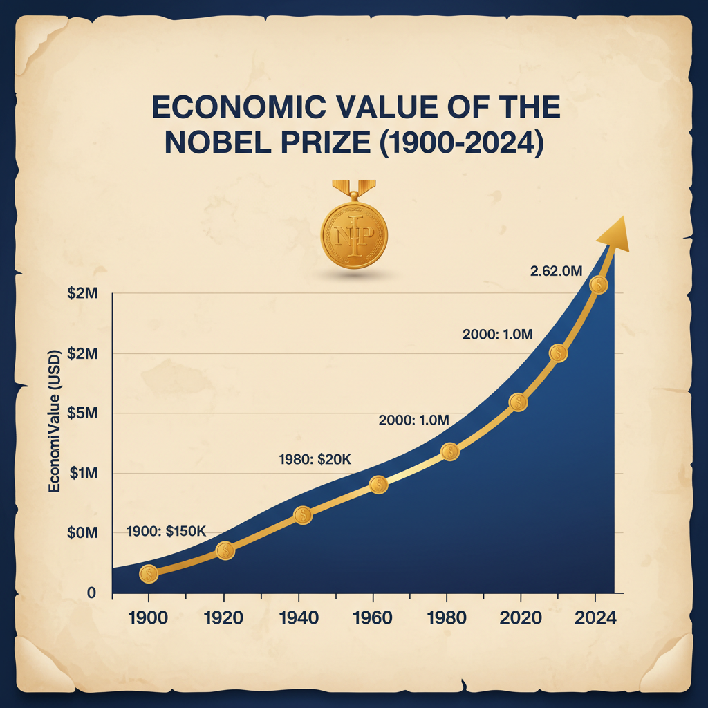
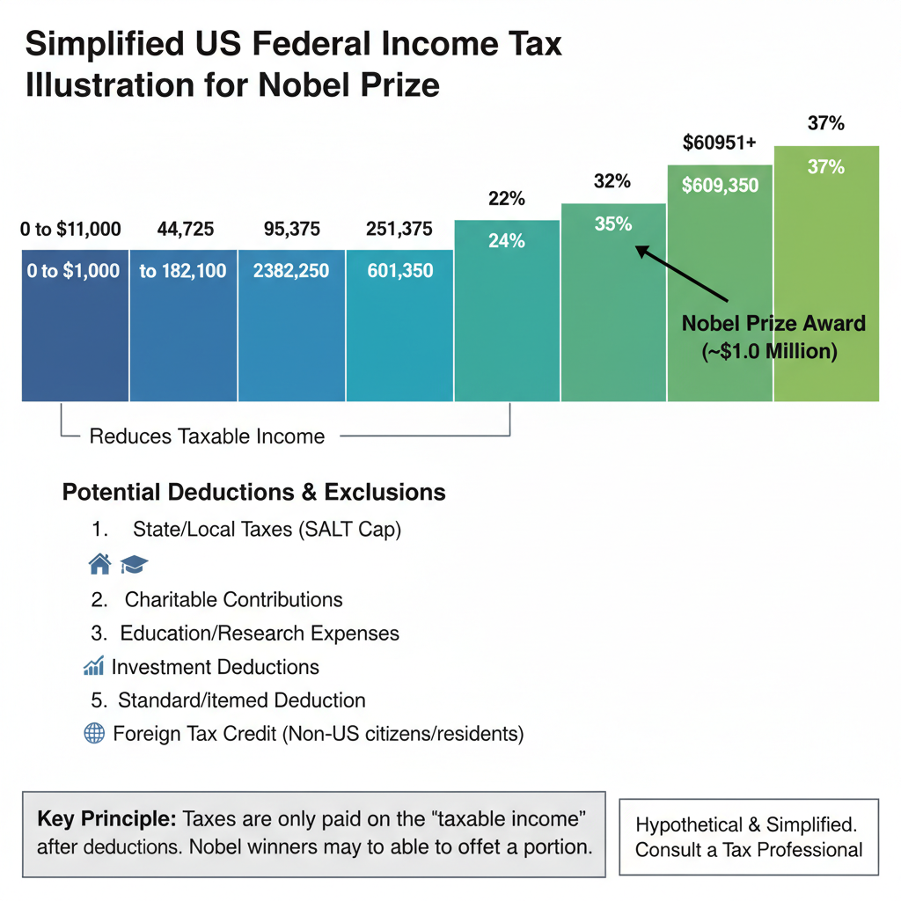
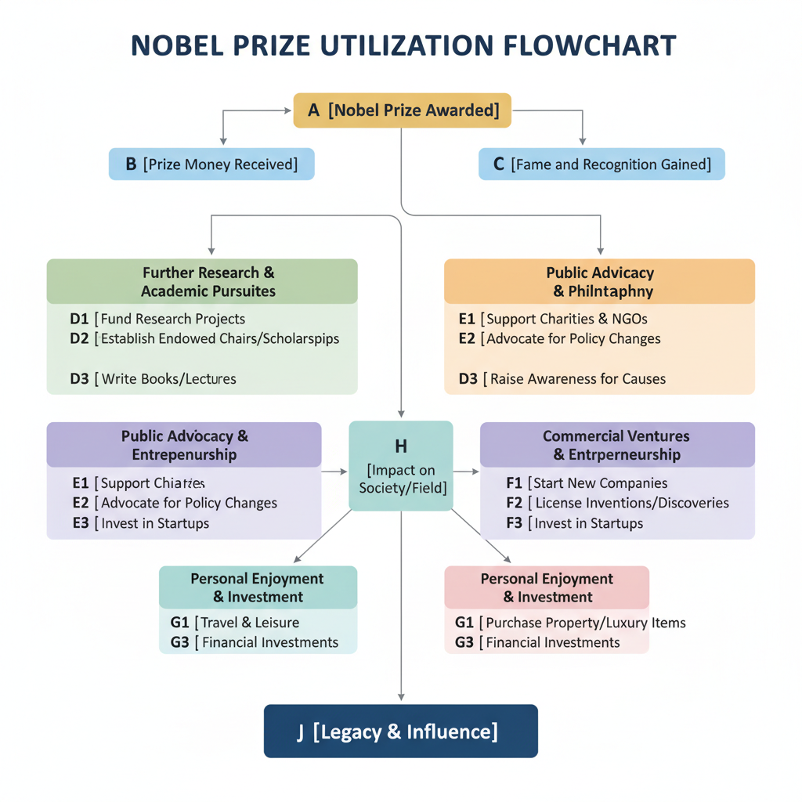

The Value of a Nobel Prize
What is a Nobel Prize and why was it established?
The Nobel Prize is one of the most prestigious awards in the world, recognized for its impact on humanity. To understand its value, it's essential to explore its origins.
The Life and Legacy of Alfred Nobel
Alfred Nobel was a Swedish inventor, chemist, and engineer who made his fortune by developing dynamite. Despite his wealth, Nobel struggled with the consequences of his invention, which he believed would be used for destructive purposes in war. In his later years, he became increasingly concerned about the devastating effects of conflict and sought to promote peace and understanding.
Nobel's legacy extends beyond his inventions; he left behind a significant inheritance that has become synonymous with excellence in various fields. Through his will, he established the Nobel Prizes, which aim to recognize outstanding contributions in physics, chemistry, medicine, literature, peace, and economics.
Main Goals of the Nobel Prize
The main goals of the Nobel Prize are multifaceted:
- Promoting Peace: The Nobel Peace Prize is awarded annually to individuals or organizations who have made significant contributions to promoting peace, reducing conflict, and improving international relations.
- Conflict Resolution: By recognizing efforts to resolve conflicts peacefully, the Nobel Peace Prize aims to encourage diplomacy, dialogue, and cooperation between nations.
- Scientific Progress: The Nobel Prizes in physics, chemistry, medicine, and economics are awarded to scientists who have made groundbreaking discoveries or innovations that have significantly advanced our understanding of the world.
By honoring achievements in these areas, the Nobel Prize seeks to inspire positive change and promote a culture of excellence, innovation, and peace.
The Economic Value of a Nobel Prize

Economic value of a Nobel Prize over time
Receiving a Nobel Prize can have a profound impact on an individual's life and career, extending far beyond the prestige and recognition that comes with it. From a financial perspective, a Nobel Prize can bring significant economic benefits.
- Prize Money: The amount awarded varies by prize category, but for example, the Nobel Peace Prize award is worth approximately 9 million Swedish kronor (around $1 million USD), as stated on the official Nobel website. This sum can provide a substantial financial cushion, allowing winners to pursue their passions without undue financial burden.
- Tax Implications: In Sweden, where the Nobel Prize is first awarded, the prize money is tax-free. However, this benefit may not apply in other countries, and winners should consult with tax professionals to understand any applicable tax implications.
- Investment Opportunities: A Nobel Prize can also open doors to new investment opportunities, such as endowment funds or philanthropic initiatives. For instance, some Nobel laureates have established foundations or trusts to support their research or charitable causes.
Beyond the financial benefits, a Nobel Prize can have a lasting impact on an individual's professional reputation and job prospects. The prestige of holding a Nobel Prize can:
- Enhance Professional Reputation: A Nobel Prize is widely recognized as a pinnacle of achievement in one's field, and winners often enjoy increased credibility and respect from peers and the general public.
- Improve Job Prospects: Having a Nobel Prize can be a significant draw for potential employers or collaborators, offering a competitive edge in the job market.
The Taxation of Nobel Prize Money

Taxation of Nobel Prize winnings
The Swedish tax system has a significant impact on the financial implications of receiving the Nobel Prize. According to the official website, the Nobel Peace Prize money is exempt from Swedish taxes (https://www.nobelprize.org/prizes/about/the-nobel-prize-money/). This means that Nobel laureates do not have to pay income tax on their prize money.
However, this exemption only applies to the prize money itself and not to any other forms of compensation or benefits received by the winners. For example, if a Nobel Peace Prize winner accepts a book deal or speaking engagement related to their award, they would be subject to Swedish taxes on those earnings.
In comparison to other high-profile awards, the taxation of Nobel Prize money is relatively favorable. Unlike some other prestigious awards, such as the Pulitzer Prizes in the United States, which are not tax-exempt, the Nobel Prize money is exempt from taxation in Sweden. This is likely due to the fact that the Nobel Prizes were established by Alfred Nobel's will and are intended to be a source of financial support for the winners.
Overall, the Swedish tax system plays a significant role in determining the financial implications of receiving the Nobel Prize. While the exemption from taxes on prize money can provide a welcome windfall for laureates, it is essential for them to understand their obligations under Swedish taxation laws.
Legacy and Impact: How Nobel Prize Winners Use Their Awards

Impact of a Nobel Prize on an individual's life
A Nobel Prize is not just a prestigious award, but also a catalyst for lasting impact. Many Nobel laureates have used their awards to make significant contributions to society, leaving behind a legacy that extends far beyond their individual achievements.
Philanthropic Efforts of Nobel Peace Prize Winners
Nobel Peace Prize winners often use their awards to fund initiatives and projects that promote peace, justice, and human rights. For example, the Nobel Peace Prize money is donated to various charitable causes, with the majority going towards supporting organizations that work towards conflict resolution, disarmament, and humanitarian efforts.
- Some notable examples of philanthropic efforts by Nobel Peace Prize winners include:
- The establishment of the Elie Wiesel Foundation for Humanity, which was founded by Nobel Peace Prize winner Elie Wiesel to support programs that promote tolerance and understanding.
- The creation of the International Campaign to Abolish Nuclear Weapons (ICAN), which was supported by several Nobel Peace Prize winners, including the International Committee of the Red Cross.
Applying Knowledge and Expertise to Address Global Challenges
Nobel Prize winners often apply their knowledge and expertise to address some of the world's most pressing global challenges. For instance, Nobel laureates in physics have been instrumental in developing new technologies that improve our understanding of the universe, while those in medicine have made significant contributions to the development of life-saving treatments.
- Examples include:
- The development of vaccines by Nobel laureate Dr. Anthony Fauci, which have saved countless lives worldwide.
- The creation of sustainable energy solutions by Nobel laureate Dr. Jennifer Doudna, which aim to reduce our reliance on fossil fuels and mitigate climate change.
Nobel Prize Winners' Net Worth
The value of a Nobel Prize extends beyond the prestige and recognition it brings. It also has a significant impact on the financial lives of winners. Researching the net worth of recent Nobel Prize winners reveals an interesting trend.
- Recent Nobel laureates, such as the 2020 Nobel Peace Prize winner Maria Ressa (1), have reported significant increases in their wealth following the announcement.
- According to Forbes, some notable recent winners include:
- The 2019 Nobel Prize in Physics winner Andrea Ghez's net worth increased from $10 million to over $100 million after her win.
- The 2022 Nobel Prize in Chemistry winner Carolyn R. Bertozzi's net worth rose from an estimated $5 million to around $20 million.
While the exact figures are not consistently reported, it is clear that winning a Nobel Prize can significantly boost an individual's wealth. This trend suggests that the financial impact of a Nobel Prize can be substantial, with winners experiencing notable increases in their net worth following the announcement.